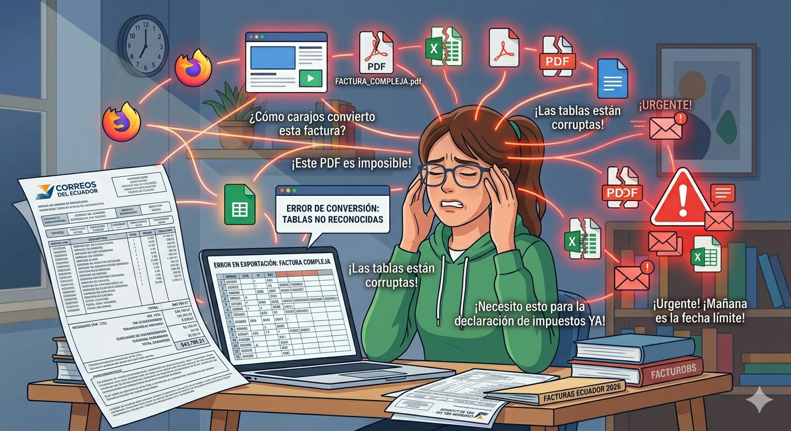
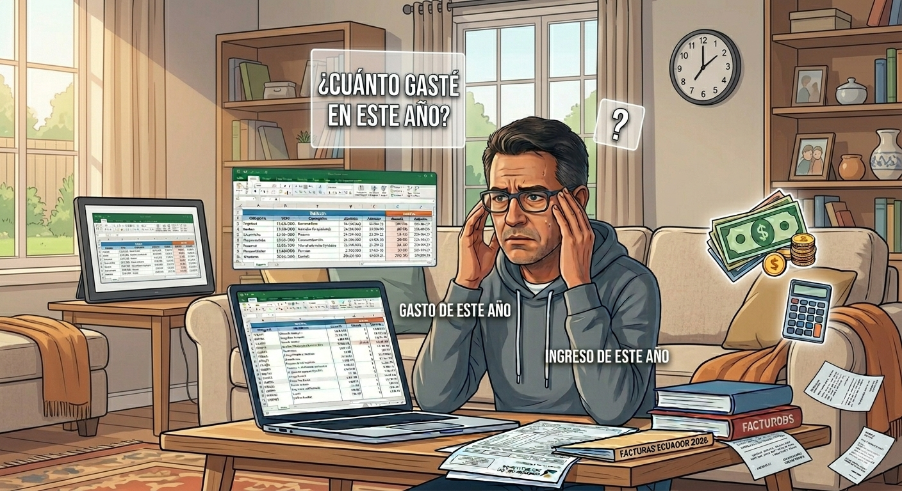

NotebookLM: La libreta inteligente
Carlos Iñiguez Ph.D.
XIII JISIC 2026: La IA transformando el mundo
20 de junio de 2026
Agenda de la Sesión:
- Motivación e Infoxicación Académica.
- Introducción a NotebookLM.
- Técnicas de Redacción de Prompts.
- Casos de Uso Prácticos (Estudio, Oficina, Finanzas).
NotebookLM: La libreta inteligente
¿Qué es NotebookLM?
- Origen: Google Labs (Project Tailwind).
- Paradigma: Sistemas Source-Centric especializados en tus datos.
- Motor: Gemini 1.5 Pro multimodal.
- Capacidad: Hasta 50 fuentes por cuaderno.
- Privacidad: Base de conocimiento privada cerrada al usuario.
Tailwind: inicio de NotebookLM
Modelo de Prompt Sugerido
- ROL: “Actúa como un [Nivel + Materia + Metodología]”.
- CONTEXTO: “Estoy preparando material sobre X tema...”.
- REFERENCIA: “Usa exclusivamente las fuentes marcadas”.
- MODELO: “Sigue este ejemplo/formato...”.
- INSTRUCCIÓN: “Escribe 5 textos...”.
- FORMATO: “1000 palabras, 4 párrafos, formato tabla”.
Trucos Útiles
- Promts claros, estructurados
- Si el prompt es complejo, rompe en partes simples
- Crea tu biblioteca de Prompts
- Dile que te pregunte lo que necesite
Antes de escribir nada, hazme las 5 preguntas más relevantes para recopilar toda la información adecuada
para conseguir que el artículo que te pido sea una respuesta de gran calidad.
Caso 1: Estudiar para examen de AppWeb
Se acerca el parcial de la asignatura “Aplicaciones Web”. Requieres comprensión profunda de conceptos
como la evolución de a Web, protocolo HTTP, HTML, reglas de estilo CSS y JS.
Paso 1: Carga de Documentos
- Crea el cuaderno: "Aplicaciones Web - Parcial I".
- Agrega Fuentes:
- PDF 00 HistoriaWeb
- PDF 01 TipoApp HTTP
- PDF 02 HTML
- PDF 03 HTML5
- PDF 04 CSS
- PDF 05 JS
- Material del Docente,
renómbralo a MaterialEstudio
- Notas personales. Renómbralo como Fundamentos de HTML5
Paso 2 y 3: Mapas y Análisis
Genera un Mapa mental, utilizando la herramienta dentro de Studio
Actúa como estudiante de la Asignatura Aplicaciones Web de la carrera de Ingeniería de Sistemas. Basado
estrictamente en la fuente “MaterialEstudio”, crea un Mapa mental del contenido 1 a 8.
Compara Cookies vs Sesiones
Actúa como un Desarrollador de Software. Basándote en las fuentes cargadas (especialmente en la fuente
MaterialEstudio, los PDF y las notas de clase), genera una tabla comparativa que evalúe: Cookies vs
Sesiones. Los criterios deben ser: Almacenamiento, tiempo de vida y Seguridad. Cita la fuente exacta
para cada celda de la tabla.
Paso 4: Análisis comparativo
Compara los tipos de Aplicaciones Web
Actúa como un Desarrollador de Software. Basándote en el contenido de la Semana 2 de la fuente
MaterialEstudio y en los PDF 01_TipoApp HTTP, genera una tabla comparativa entre los
Tipos de
Aplicaciones Web.
Auditoria: Comparar mis notas con el contenido del Docente
Revisa mis notas personales (Fuente: Fundamentos de HTML5) y compáralas con el
contenido de la Semana 3:
HTML y HTML 5 de la fuente MaterialEstudio y con el PDF 03_HTML del profesor. ¿Qué conceptos clave de
HTML 5 faltan en mis notas? Enuméralos y dame una explicación breve de cada uno según lo que dice el
profesor.
Paso 5: Simulación de Evaluación
Genérame 10 preguntas de nivel avanzado sobre Protocolo HTTP, HTML y CSS. No uses información externa de
internet, usa solo lo que los autores de estos documentos proponen. Al final, dame las respuestas para
que yo pueda calificarme.
Genera una infografía sobre CSS
Actúa como Docente de ingeniería de software. Realiza una infografía sobre CSS basándote en el PDF
05_CSS y el contenido de la Semana 4 de la fuente MaterialEstudio.
Caso 2: Exposición Evolución de la Web
Como estudiante del curso Aplicaciones Web,
se te ha solicitado realizar una presentación
sobre La Evolución de la Web. Te gustaría
contextualizar la evolución de la Web con los
hechos políticos e históricos en el Ecuador
Paso 1: Búsqueda de fuentes sobre historia de Ecuador
Este es un paso previo, por temas de procesamiento.
Realiza una búsqueda de 10 sitios web sobre la historia política del Ecuador desde 1940 a 2026.
Mientras procesa...
Paso 2: Estructura de Presentación
Básate estrictamente en el contenido de la semana 1 de la fuente MaterialEstudio y en el PDF 00
HistoriaWeb. Actúa como experto expositor de temas científicos de tecnología. Realiza la estructura de
una presentación de diapositivas sobre la Cronología de la Evolución de la Web, mencionando los inventos
relacionados a la Web entre 1940 y 1995. La estructura de cada diapositiva es:
Título: Nombre del
invento y el año de invención
Contenido: al menos 3 viñetas. En cada viñeta escribe un script para
ayudar al expositor.
Imagen: sugiere la descripción de una imagen representativa de la diapositiva.
Tono: El tono del contenido debe estar dirigido a estudiantes de Ingeniería de Software.
Guarda el resultado como Nota: DiapoEvolucionWeb
Paso 3: Evolución Web vs Historia Ecuador
Selecciona las fuentes: Material de Estudio, las páginas web
encontradas y 00_HistoriaWeb.pdf
Actúa como investigador social y tecnológico y realiza una cronología alineando los hitos de la Web con
la historia política del Ecuador (Años, Hitos Ecuador, Presidente, Hito Web).
Guarda el resultado como Nota: CronologiaEcuadorWeb
Conviértela a Fuente
Paso 4: Infografía y Código Beamer
Genera un infografía a partir de la fuente CronologiaEcuadorWeb para explicar la cronología de
eventos paralelos entre la evolución de la Web y la historia política del Ecuador. El formato de
la infografía debe ser en landscape.
Convierte la nota DiapoEvolucionWeb en fuente
Desmarca todas las fuentes y solo selecciona
DiapoEvolucionWeb
Básate en la fuente DiapoEvolucionWeb y genera la presentación en código Beamer de Latex.
en cada viñeta, pon en comentario el Script del expositor correspondiente, de tal manera que
yo pueda leer en el código la viñeta y el script que tengo que hablar
Utiliza Editor Latex para pegar el contenido y ejecutar para ver el resultado
Caso 3: Crear prototipo de IU
Te han solicitado un prototipo de Interfaz de
Usuario para la venta de cursos de Desarrollo
de Software e Inteligencia Artificial.
Paso 1: Estudio de Mercado
Busca Sitios Existentes
Buscar 10 sitios web oficiales que brinden cursos de desarrollo de software. Incluye entre ellos
Udemy, Platzi, Cousera, entre otros.
Lista los cursos más relevantes
Básate en las fuentes cargadas y sugiere una lista de cursos de desarrollo de software y
Inteligencia Artificial que tengan mayor puntuación. entrega la lista con el Nombre del curso,
una pequeña descripción, la Valoración (o likes) y el costos.
Paso 2: UX/UI - Perfil Persona, Tipografía y Color
Basado en la lista de cursos, define el perfil Persona de los potenciales usuarios que estarían
interesados en estos cursos. Incluye en el perfil Persona: Descripción breve de la Persona,
información demográfica, Motivaciones, Frustraciones, Objetivos, Habilidades tecnológicas.
Analiza las fuentes marcadas y decide un color primario, color secundario, colores neutros para
definir la paleta de colores para una nueva página de Cursos de Desarrollo de Software e IA.
Básate extrictamente en las fuentes marcadas para definir el conjunto de tipografías que se
debería utilizar para el diseño de una plataforma de cursos de desarrollo de software e IA.
Paso 3: Generación de Prototipo HTML
Usa Gemini para generar el prototipo, basado en el cuaderno de NotebookLM
Básate en la información del cuaderno para generar un prototipo de página web única en
HTML y con estilos CSS para la venta de cursos en línea sobre desarrollo de software e IA. La
página debe permitir navegar entre las categorías de cursos. En cada página se debe mostrar la
lista de cursos relacionados con la categoría, con su fotografía, descripción corta, precio y
valoración. Para el diseño visual de la página web considera estrictamente las notas sobre
tipografía y color.
Caso 4: Gestión en la Oficina
La Empresa de Venta de neumáticos recibe
diariamente varias facturas PDF de sus
clientes. Tu trabajo es registrar las facturas en
el sistema, el cual solo acepta Hojas de Cálculo.
La factura PDF, tiene varios items de
neumáticos identificados con CODE ARTICLE,
su valor unitario y subtotal.
Problema: Transcripción manual de facturas PDF a Excel propensa a errores
Solución: Lectura automatizada y estructuración de datos con NotebookLM

Paso 1: Extracción de Datos de Facturas
Actúa como experto en logística e importación de neumáticos. A partir de la factura cargada,
genera un tabla de datos con los items de la factura donde cada item tiene exclusivamente un
CODE ARTICLE. El formato de la tabla es el siguiente:
Columna 1: cantidad (en formato de número. Ejemplo: 4),
Columna 2: CODE ARTICLE,
Columna 3: precio unitario (en formato decimal. Ejemplo: 100,7),
Columna 4: monto total (en formato decimal. Ejemplo: 100,7).
Paso 2: Limpieza y Unificación
El sistema de seguimiento solo acepta códigos de artículos únicos por cada carga. La factura
PDF tiene varios CODE ARTICLE repetidos. Agrupa los CODE ARTICLE sumando sus
cantidades.
Revisa si la columna CODE ARTICLE tiene códigos repetidos.
Genera nuevamente la tabla de datos agrupando los CODE ARTICLE repetidos, sumando sus
cantidades. Agrega la Columna 5: Observaciones (escribe UNIFICADO si fue agrupado).
Ordena por cantidad de manera ascendente.
A partir de la Tabla de Datos, genera la Hoja de Cálculo en Google Drive
Caso 5: Finanzas Personales
Analiza tus gastos e ingresos personales registrados en un fichero Excel.
Objetivo: Importar datos a Google Drive y usarlo como fuente en NotebookLM.
Flujo de trabajo con Excel en Drive:
- Importar Excel a Drive.
- Guardar como Hoja de cálculo de Google.
- Agregar a NotebookLM como fuente.

Paso 1: Consultas Financieras
Haz una lista de todas las SUB_CATEGORIAS implicadas en los movimientos financieros.
Indica cuál es la SUB_CATEGORIA que más gastos tuvo en el año 2026. Muestra el resultado en tabla por
mes.
Indica en qué meses y años no se tuvo un ingreso por la SUB_CATEGORIA “ARRIENDO COTOCOLLAO”.
Paso 2: Análisis de Registros Relacionados
La columna RELACIONADOS indica que los registros con el mismo número están relacionados (ingresos y
gastos). ¿Cuántos registros están relacionados?
Realiza una tabla de datos con las filas que tienen números en la columna RELACIONADOS e
indica cuántos registros encontraste.
Cuadre de saldos
A partir de la tabla generada, suma la columna Valor agrupando los registros que tengan el
mismo número de la columna RELACIONADOS. Agrega la Columna 3 para indicar si el Valor
es mayor o menor a 0.
Valores por cubrir
A partir de esta última tabla, presenta unicamente los registros cuyo Estado es Menor a 0 y
agrega una columna al final indicando la descripción de los registros.
¡Gracias por su atención!
Expositor: Carlos Iñiguez Ph.D. - JISIC 2026